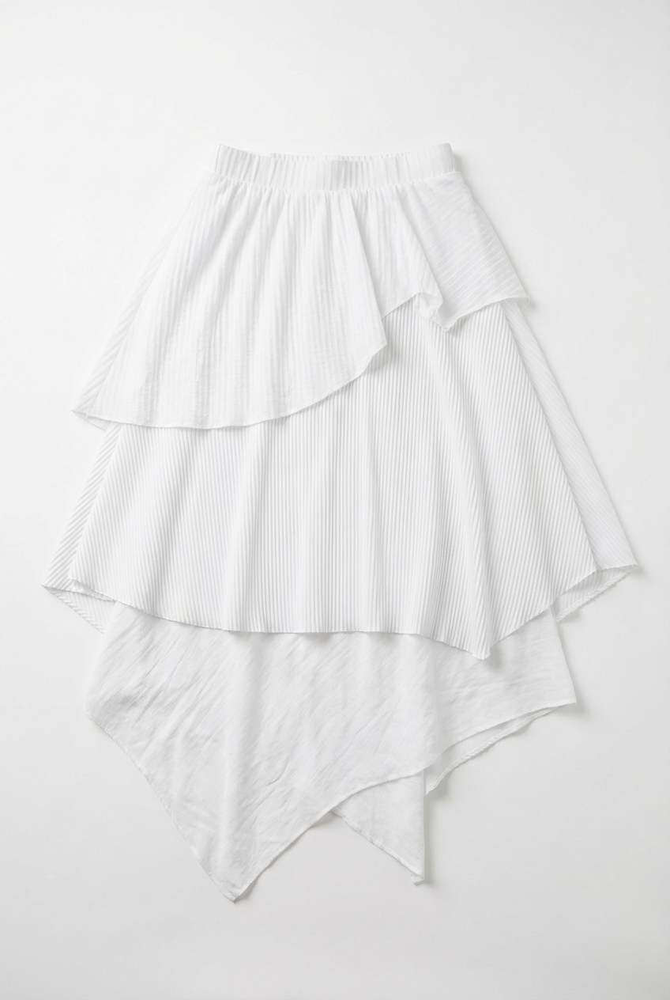

Look 1
Dual Texture Knit Vest with Adjustable Button Trousers
An opening balance of soft knit against a controlled trouser line.
View in ProductsA paced sequence of six looks where material contrast and proportion shift gradually, then return to product detail.
An opening balance of soft knit against a controlled trouser line.
View in Products
A compact silhouette chapter with sharper line tension and less volume.
View in Products
Graphic restraint meets tailored volume without breaking the sequence.
View in Products
A texture pivot where line and movement are held in equal weight.
View in Products
A denser construction moment contained within the same quiet cadence.
View in Products
The closing silhouette resolves the chapter in a single vertical line.
View in Products